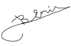

Please Press To Java Tab For Reaching Java Programming Language Courses In English !!!
Prof. Dr. Bedri Doğan Emir'in Temel Matematik Sayfalarına Hoş Geldiniz !!!
Temel Matematik notları, öğrencilere temel matematik konularını açıklamak ve matematik konusunda yetkinlik kazandırmak amacı ile yazılmış bir ders kitabıdır. Temel Matematik ders kitabı, Mathcad CAS (Computer Algebra System) BGC (Bilgisayar Gözetiminde Matematik) program platformundan yararlanılarak yazılmıştır. Bu kitap içeriğinde yapılmış olan tüm uygulamalar, eşdeğer tüm diğer BGC sistemleri de uygulanabilir.
Temel Matematik ders kitabı, matematiği temelden öğreterek, matematik konusunda öğrencilere, kendi kendilerine gelişebilme yeteneği kazandırmak amacı ile hazırlanmıştır. Konu ile ilgili herkese, bu kitabı incelemeleri sağlık verilir.
Dikotomik yöntemle fonksiyon köklerinin bulunması için, bu çalışma çerçevesinde geliştirilmiş bir Javascript programının incelenmesi için, lütfen Dikotomik kök bulma yöntemini inceleyiniz.
Temel Matematik Kitabını indirmek için Lütfen Tıklayınız Temel Matematik (PDF formunda)
Kendi yorumlarınızı kitabın satır aralarına yazabilmeniz için Temel Matematik kitabını HTML formunda ve MS WORD (docs) dosyası olarak da indirebilirsiniz.
Tüm izleyicilerimize en içten başarı dilekleri ile ...
Prof. Dr. Bedri Doğan Emir

Açıklanmasını istediğiniz konuları lütfen belirtiniz : bedri@bedriemir.com